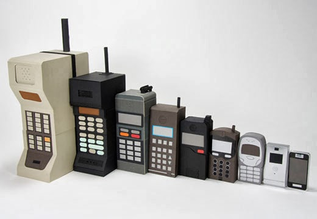

Telefonia Celular
SONY
SONY XPERIA M

SONY XPERIA M

Martin Cooper fue el pionero en esta tecnología, a él se le considera como "el padre de la telefonía celular" al introducir el primer radioteléfono, en 1973, en Estados Unidos, mientras trabajaba para Motorola; pero no fue hasta 1979 cuando aparecieron los primeros sistemas comerciales en Tokio, Japón por la compañía NTT.
En 1981, los países nórdicos introdujeron un sistema celular similar a AMPS (Advanced Mobile Phone System). Por otro lado, en Estados Unidos, gracias a que la entidad reguladora de ese país adoptó reglas para la creación de un servicio comercial de telefonía celular, en 1983 se puso en operación el primer sistema comercial en la ciudad de Chicago.
Con ese punto de partida, en varios países se diseminó la telefonía celular como una alternativa a la telefonía convencional inalámbrica. La tecnología tuvo gran aceptación, por lo que a los pocos años de implantarse se empezó a saturar el servicio. En ese sentido, hubo la necesidad de desarrollar e implantar otras formas de acceso múltiple al canal y transformar los sistemas analógicos a digitales, con el objeto de darle cabida a más usuarios. Para separar una etapa de la otra, la telefonía celular se ha caracterizado por contar con diferentes generaciones. A continuación, se describe cada una de ellas.
El primer radio telefonico
Evolucion de la telefonia celular
En este nivel encajan los smartphones que estén dotados con casi todos los elementos más evolucionados de la telefonía móvil que citamos anteriormente, pero posiblemente por el sistema operativo u otra causa no cumple de manera completa con cada uno de esos requisitos. Por ejemplo, el gigantesco Samsung Galaxy mega 6.3 cuenta con características notables, pero llegó con procesador de doble núcleo y memoria RAM de 1.5GB, cuando en el mercado existen telefonos celulares con cuatro núcleos y 2GB de RAM. De haber tenido ambos componentes, el Galaxy Mega 6.3 estaría en el estrato superior. De igual forma, podemos colocar aquí teléfonos con muchas especificaciones de móviles de media gama plus, siempre y cuando ese celular proporcione innovaciones únicas que marcan hito en el sector. ¿Qué podemos entender como 'innovación única'? Sencillo, una novedad que no encontremos en ningún otro dispositivo, como por ejemplo la cámara fotográfica del Nokia lumia 1020, con sus 41 megapixeles, tecnología pure view y excelente apertura del diafragma de f/2.2. Eso asigna valor agregado al teléfono.

Los smartphones de media gama se caracterizan por tener pantallas de calidad, pero de menor tamaño, resolución y profundidad de pixeles por pulgada; en la mayoría de los casos funcionan con una versión anterior a la más actual de su sistema operativo; los procesadores no tienen la potencia de los que encontramos en gamas superiores, y las cámaras y fotográficas generalmente cuentan con menos cantidad de megapíxeles. En esta categoría también situaremos a cierto número de celulares que en su momento fueron considerados de alta gama, pero que se han quedado rezagados por los adelantos que se producen en la telefonía celular. Por ejemplo, ¿dónde colocarías un smartphone con procesador dual-core y velocidad de hasta 1.2 GHz, que además llegó originalmente con sistema operativo Android v2.3.4 Gingerbread, memoria RAM de 1GB y batería de tan sólo 1.650 mAh? Pues bien, esas características corresponden al afamado Samsung Galaxy S II, que salió al mercado como un dispositivo móvil de alta gama en abril de 2011 y fue líder en ventas hasta comienzo del 2012. Pues ese móvil ya no es un celular de alta gama, es de media gama.

En esta categoría distribuiremos los celulares inteligentes con plataformas que no dan soporte a muchas utilidades que tienen los teléfonos de otras gamas. Sus pantallas son de escasas dimensiones y resolución, poca memoria RAM y mínima capacidad de almacenamiento interno, cámaras VGA (no llegan al Megapíxel), menores herramientas, acceso a redes y aplicaciones, entre otros aspectos. Se diferencian de los teléfonos básicos (no inteligentes), por el hecho de permitir funcionalidades que van más allá de llamar y recibir llamadas. La clave de todo es que los smartphones trabajan con un sistema operativo informático móvil, dotado de una interfaz para el acceso a Internet, cuentas de correo electrónico y el ingreso de datos a través de un teclado QWERTY. Permiten instalación de programas, la lectura de documentos en distintos formatos y te ayudan a realizar tareas y organizar tus archivos personales. Están diseñados de manera muy sencilla para la fácil y rápida compenetración del usuario, los materiales de fabricación garantizan durabilidad y la batería generalmente es de gran rendimiento.